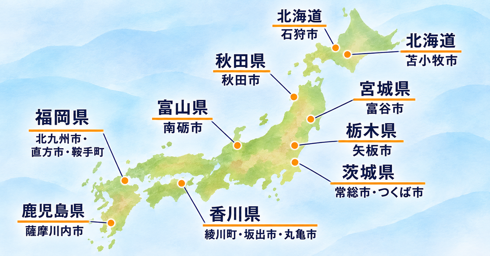

Home / Research / Data Center & Digital Infrastructure / GX戦略地域「データセンター集積型」
INDEPENDENT RESEARCH & ANALYSIS
GX戦略地域「データセンター集積型」
GX戦略地域「データセンター集積型」の9地域を対象とした調査です。

Home / Research / Data Center & Digital Infrastructure / GX戦略地域「データセンター集積型」
INDEPENDENT RESEARCH & ANALYSIS
GX戦略地域「データセンター集積型」の9地域を対象とした調査です。
